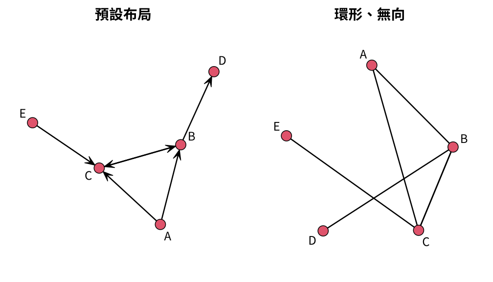
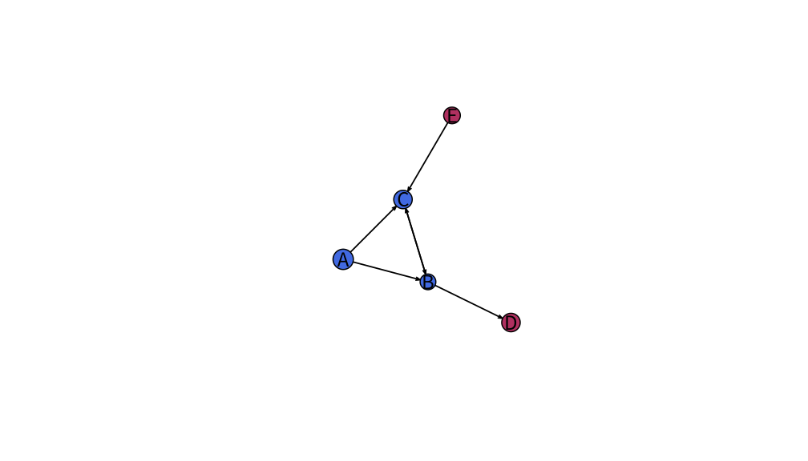
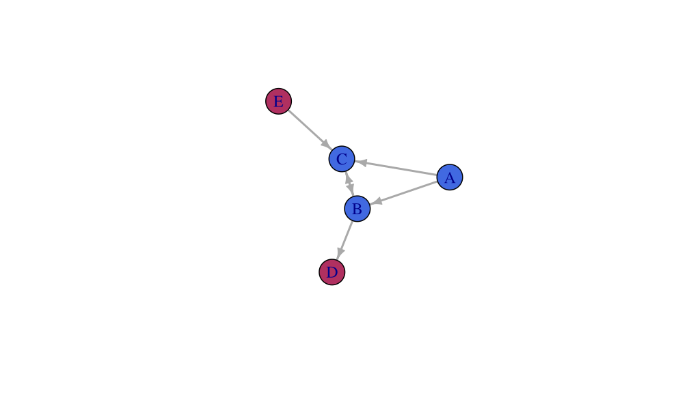
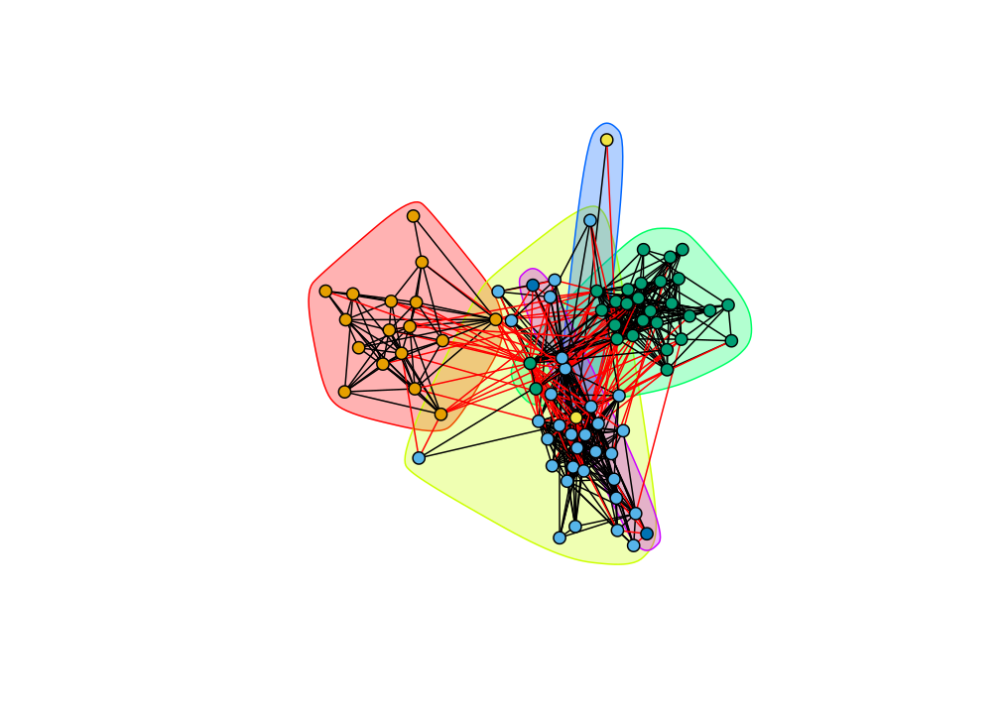
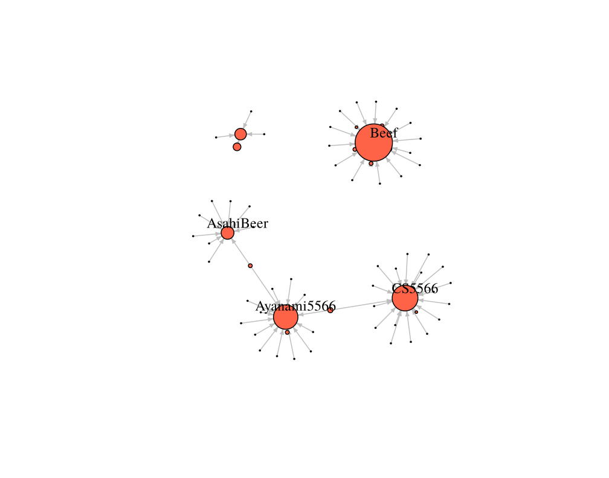
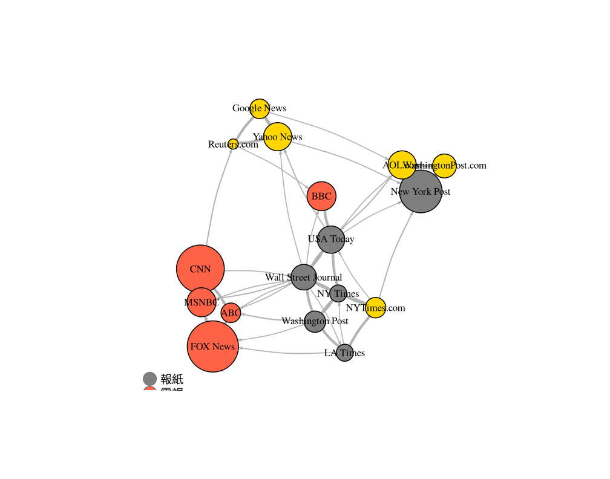
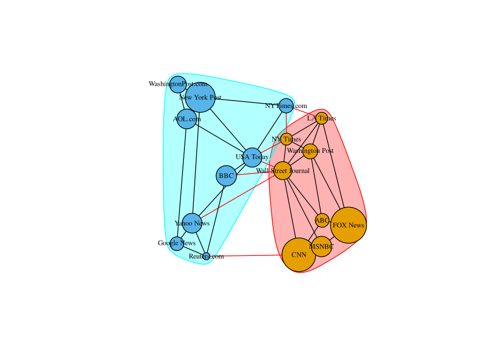
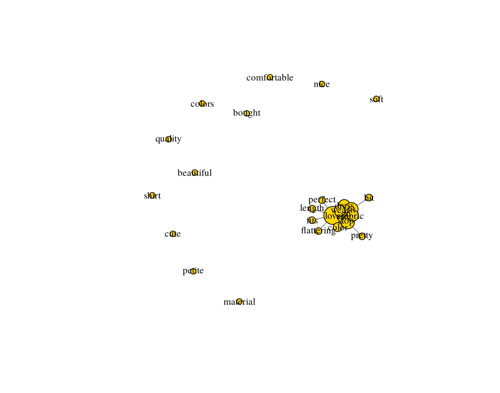

首頁 › 課程筆記 › 第 13 章 前面的資料都是「一個個獨立的個體」：每位顧客、每間公司各占一列。但很多時候，個體之間的關係 才是重點——誰轉帳給誰、誰推了誰的文章、哪些詞常一起出現、哪些媒體互相引用。社會網路分析 （Social Network Analysis，SNA）把這些關係抽象成「圖」（graph），用來回答：誰是關鍵人物？訊息怎麼擴散？哪些人自成一個小圈圈？
13.1 節點、邊與方向
名詞
意思
例子
節點 （node／vertex）網路中的個體
人、企業、網頁、帳戶、詞彙
邊 （edge／link／tie）節點之間的關係
朋友、轉帳、推文、超連結、共同出現
權重 （weight）邊的強弱
通訊次數、轉帳金額、推文次數
有向圖 （directed）邊有方向：A → B 不代表 B → A
A 推了 B 的文章、A 轉帳給 B
無向圖 （undirected）邊沒有方向，關係對稱
A 和 B 是朋友、兩個詞出現在同一篇文章
老師講義舉的商業應用：
金融保險詐欺偵測 ：把帳戶、地址、電話、轉帳、保單、理賠串成網路，自動找出可疑的集團（彼此連結特別緊密的一群人），節省人工調查時間。客戶行銷 ：依社群關係把客戶分組，找出群體中的意見領袖 （leader），針對他們設計行銷活動以提高報酬率，或優先挽留他們以降低流失。 Concept Check：13.1 節點、邊與方向 題目照期末考的題型自編（選擇、填空、簡答、寫程式），不是老師出的題目。選擇與填空用英文題幹，附中文題意。
Which relationship is most naturally represented by a directed network?
(A) Two people are classmates (B) Two companies share a board member (C) Two words appear in the same news document (D) User A replies to user B's post 顯示解答 答案 (D) User A replies to user B's post
解析
A 回覆 B 的文章不代表 B 也回覆 A，關係有方向。同學、同時出現、共同董事都是對稱關係，用無向圖。
Which relationship is best represented by a directed network?
(A) Two people who are classmates in the same course (B) Two stocks whose returns are strongly correlated (C) One PTT user replying to another user's post (D) Two companies that share the same board member 顯示解答 答案 (C) One PTT user replying to another user's post
解析
「A 回覆 B」有方向，B 不一定回覆 A，所以是有向邊。同學、相關、共同董事都是對稱的關係，用無向邊即可。
In a network of PTT users, what could an edge weight represent?
(A) The number of times one user replied to the other user (B) The alphabetical order of the two user names on the site (C) The total number of users who are registered on PTT (D) The date on which the network data was downloaded 顯示解答 中文題意
PTT 使用者網路中，邊的權重可以代表什麼？
答案 (A) The number of times one user replied to the other user
解析
權重表示兩個節點之間關係的強弱，例如回覆次數、交易金額、通話次數。權重越大，關係越緊密。
Give one business application of network analysis and explain what the nodes and edges are in that application.
顯示解答 中文題意
舉一個網路分析的商業應用，說明節點和邊各是什麼。
答案 例如保險詐欺偵測：節點是保戶、修車廠、醫生、律師，邊是「同一件理賠案中一起出現」。正常理賠的人彼此很少重複連結，若一小群人和同一家修車廠、同一位醫生反覆連在一起，形成異常緊密的社群，就值得調查。其他答案：行銷找意見領袖（節點是顧客，邊是推薦或互動）、銀行轉帳網路洗錢偵測。
解析
答題時要說清楚「誰是節點、什麼關係構成邊、邊有沒有方向或權重」，這決定了要算哪些指標。
13.2 兩種表示法：相鄰矩陣與邊列表相鄰矩陣
相鄰矩陣 （adjacency matrix，社會網路分析也叫 sociomatrix）是 n × n 的方陣：第 i 列第 j 欄為 1，代表有一條從節點 i 指向節點 j 的邊。
複製 ▶ 執行 R netmat1 <- rbind ( c ( 0 , 1 , 1 , 0 , 0 ),
c ( 0 , 0 , 1 , 1 , 0 ),
c ( 0 , 1 , 0 , 0 , 0 ),
c ( 0 , 0 , 0 , 0 , 0 ),
c ( 0 , 0 , 1 , 0 , 0 ))
rownames ( netmat1 ) <- colnames ( netmat1 ) <- LETTERS [ 1 : 5 ]
netmat1
## A B C D E
## A 0 1 1 0 0
## B 0 0 1 1 0
## C 0 1 0 0 0
## D 0 0 0 0 0
## E 0 0 1 0 0讀法：第 A 列有兩個 1（B、C 欄），代表 A → B、A → C。第 D 列全是 0：D 沒有指向任何人；第 D 欄有一個 1：只有 B 指向 D。
邊列表
邊列表 （edge list）每一列是一條邊：起點、終點（可以再加權重等邊的屬性）：
複製 ▶ 執行 R netmat2 <- rbind ( c ( 1 , 2 ),
c ( 1 , 3 ),
c ( 2 , 3 ),
c ( 2 , 4 ),
c ( 3 , 2 ),
c ( 5 , 3 ))
netmat2
## [,1] [,2]
## [1,] 1 2
## [2,] 1 3
## [3,] 2 3
## [4,] 2 4
## [5,] 3 2
## [6,] 5 3
相鄰矩陣
邊列表
大小
n² 個格子
邊數 × 2（或 3）
優點
直觀，適合矩陣運算
省空間，適合大型稀疏網路，方便加入邊的屬性
建議
需要矩陣運算時再轉換
收集資料時用這種
一萬個帳戶的轉帳網路，相鄰矩陣有一億個格子、絕大多數是 0；邊列表只記錄真的有轉帳的那幾萬筆。
Concept Check：13.2 兩種表示法：相鄰矩陣與邊列表 題目照期末考的題型自編（選擇、填空、簡答、寫程式），不是老師出的題目。選擇與填空用英文題幹，附中文題意。
In the adjacency matrix netmat1 above, how many nodes does node B point to, and how many nodes point to node C?
顯示解答 中文題意
在上面的 netmat1 中，B 指向幾個節點？有幾個節點指向 C？
答案 B 指向 2 個（C、D：B 那一列的 1 的個數）；有 3 個節點指向 C（A、B、E：C 那一欄的 1 的個數）。
解析
列加總是出度（out-degree），欄加總是入度（in-degree）：rowSums(netmat1)、colSums(netmat1)。
In an adjacency matrix A of a directed network, what does A["Amy", "Ben"] == 1 mean?
(A) Ben has exactly one tie with Amy in either direction (B) Amy has only one tie in total (C) Amy and Ben are the same node (D) There is a tie from Amy to Ben 顯示解答 中文題意
有向網路的相鄰矩陣中，A["Amy", "Ben"] == 1 是什麼意思？
答案 (D) There is a tie from Amy to Ben
解析
相鄰矩陣的列是「出發」、欄是「到達」，第 i 列第 j 欄為 1 表示有一條從 i 到 j 的邊。無向網路的相鄰矩陣是對稱的。
A social network has 100,000 users, and each user follows about 50 others. Which representation is more practical, and why?
(A) Adjacency matrix, since it shows every pair of users explicitly (B) Edge list, since it stores only the existing ties and saves space (C) Adjacency matrix, since edge lists cannot record any direction (D) Edge list, since it is the only format that igraph can ever read in 顯示解答 中文題意
十萬名使用者、每人追蹤約 50 人，用哪種表示法比較實際？
答案 (B) Edge list, since it stores only the existing ties and saves space
解析
相鄰矩陣要 100,000 × 100,000 格，幾乎全是 0；邊列表只存實際存在的約 500 萬條邊。邊列表可以有方向（from、to），igraph 兩種格式都能讀。
Given a data frame edges with columns from and to, an igraph object is created with g <- ________(edges, directed = TRUE).
顯示解答 中文題意
用邊列表資料框建立 igraph 網路的函數是什麼？
答案 graph_from_data_frame
解析
資料框的前兩欄是起點與終點，其他欄（例如 weight）會成為邊的屬性。相鄰矩陣則用 graph_from_adjacency_matrix()。
13.3 用 statnet 建立與描述網路statnet 是社會網路分析的一整套套件 （install.packages("statnet", dependencies = TRUE) 會一次裝好 network、sna 等），提供 network 物件與 gplot() 畫圖。
複製 R library ( network ) # statnet 的一部分：network 物件
library ( sna ) # statnet 的一部分：網路指標與 gplot()
net1 <- as.network ( x = netmat1 ,
directed = TRUE , # 有向圖
loops = FALSE , # 不允許自己連到自己
matrix.type = "adjacency" ) # 輸入是相鄰矩陣
network.vertex.names ( net1 ) <- LETTERS [ 1 : 5 ]
class ( net1 )
## [1] "network"## Network attributes:
## vertices = 5
## directed = TRUE
## hyper = FALSE
## loops = FALSE
## multiple = FALSE
## bipartite = FALSE
## total edges = 6
## missing edges = 0
## non-missing edges = 6
## density = 0.3
##
## Vertex attributes:
## vertex.names:
## character valued attribute
## 5 valid vertex names
##
## No edge attributes
##
## Network adjacency matrix:
## A B C D E
## A 0 1 1 0 0
## B 0 0 1 1 0
## C 0 1 0 0 0
## D 0 0 0 0 0
## E 0 0 1 0 0用邊列表建立：
複製 R net2 <- network ( netmat2 , matrix.type = "edgelist" )
network.vertex.names ( net2 ) <- c ( "A" , "B" , "C" , "D" , "E" )
as.sociomatrix ( net2 ) # 轉回相鄰矩陣
## A B C D E
## A 0 1 1 0 0
## B 0 0 1 1 0
## C 0 1 0 0 0
## D 0 0 0 0 0
## E 0 0 1 0 0複製 R as.matrix ( net1 , matrix.type = "edgelist" ) # 相鄰矩陣轉邊列表
## [,1] [,2]
## [1,] 1 2
## [2,] 3 2
## [3,] 1 3
## [4,] 2 3
## [5,] 5 3
## [6,] 2 4
## attr(,"n")
## [1] 5
## attr(,"vnames")
## [1] "A" "B" "C" "D" "E"netmat1 和 netmat2 其實是同一個網路 的兩種寫法——as.sociomatrix(net2) 和 netmat1 完全一樣。
網路整體指標
複製 R network.size ( net1 ) # 節點數
## [1] 5## [1] 0.3複製 R gtrans ( net1 ) # 群聚係數（遞移性）
## [1] 0.4
密度 （density）= 實際邊數 ÷ 最大可能邊數，介於 0～1。5 個節點的有向圖最多有 5 × 4 = 20 條邊，這裡有 6 條，密度 = 6/20 = 0.3。群聚係數 （clustering coefficient，也叫遞移性 transitivity）：「朋友的朋友也是朋友」的程度。A → B、B → C 時，A → C 是否也存在？介於 0～1，越高代表小圈圈越緊密。
畫網路圖
複製 R par ( mfrow = c ( 1 , 2 ), mar = c ( 1 , 1 , 2 , 1 ))
set.seed ( 1 )
gplot ( net1 , displaylabels = TRUE , main = "預設布局" )
gplot ( net1 , gmode = "graph" , mode = "circle" , displaylabels = TRUE , main = "環形、無向" )

複製 ▶ 執行 R par ( mfrow = c ( 1 , 1 ))
displaylabels = TRUE 顯示節點名稱。gmode = "graph" 當成無向圖畫（不畫箭頭）；mode = "circle" 環形布局、"mds" 依距離擺放。布局有隨機性，先 set.seed() 每次才會畫得一樣。
GGally::ggnet2() 可以用 ggplot2 的風格畫網路圖（老師提供的參考：briatte.github.io/ggnet）。
節點屬性
節點可以帶屬性（性別、年齡、客群……），再用顏色、大小呈現：
複製 R gender <- c ( rep ( "Female" , 3 ), rep ( "Male" , 2 ))
set.vertex.attribute ( net1 , "Gender" , gender )
set.seed ( 2026 )
age <- round ( rnorm ( 5 , 20 , 3 ))
set.vertex.attribute ( net1 , "Age" , age )
get.vertex.attribute ( net1 , "Gender" )
## [1] "Female" "Female" "Female" "Male" "Male"複製 R node_colors <- rep ( "" , 5 ) # 用 for 迴圈依性別決定顏色
for ( i in 1 : 5 ) {
if ( get.vertex.attribute ( net1 , "Gender" )[ i ] == "Female" ) {
node_colors [ i ] <- "royalblue"
} else {
node_colors [ i ] <- "maroon"
}
}
node_colors
## [1] "royalblue" "royalblue" "royalblue" "maroon" "maroon"複製 R set.seed ( 1 )
plot.network ( net1 ,
vertex.col = node_colors , # 顏色：性別
vertex.cex = age / 5 , # 大小：年齡
displaylabels = TRUE ,
label.pos = 5 ) # 標籤直接畫在節點上

常見錯誤 statnet 與 igraph 的函數 撞名 statnet（sna）和 igraph 都有 degree()、betweenness()、closeness() 等同名函數，兩個同時載入時，後載入的會蓋掉先載入的。做法：一次只載入一個（用 detach("package:sna") 卸載），或寫明 igraph::degree()。老師講義也提到：如果 set.vertex.attribute() 不能用，先 detach("package:igraph")。
複製 R detach ( "package:sna" ); detach ( "package:network" ) # 接下來改用 igraph
Concept Check：13.3 用 statnet 建立與描述網路 題目照期末考的題型自編（選擇、填空、簡答、寫程式），不是老師出的題目。選擇與填空用英文題幹，附中文題意。
A directed network without self-loops has 6 nodes and 9 edges. What is its density?
(A) 0.25 (B) 0.50 (C) 0.30 (D) 0.60 顯示解答 中文題意
6 個節點、9 條邊、不允許自我連結的有向網路，密度是多少？
解析
有向圖最多 n(n − 1) = 6 × 5 = 30 條邊，密度 = 9 / 30 = 0.30。若是無向圖，最多 n(n − 1)/2 = 15 條，密度就是 0.60。
An undirected network has 5 nodes and 4 edges. What is its density?
(A) 0.2 (B) 1.25 (C) 0.8 (D) 0.4 顯示解答 中文題意
5 個節點、4 條邊的無向網路，密度是多少？
解析
無向網路最多可能有 \(5\times4\div2=10\) 條邊，密度 = 實際邊數 ÷ 可能邊數 = 4 ÷ 10 = 0.4。
A network has a high clustering coefficient. What does this mean?
(A) Most nodes are connected directly to one central hub node (B) Every node in the network has exactly the same degree value (C) The network contains several components with no connections (D) Two nodes that share a neighbor are likely to be linked too 顯示解答 答案 (D) Two nodes that share a neighbor are likely to be linked too
解析
群聚係數衡量「朋友的朋友也是朋友」的程度，也就是三角形有多常見。社群網路的群聚係數通常很高。
For a statnet network object net, the density is computed with ________(net) and the transitivity (clustering) with gtrans(net).
顯示解答 中文題意
statnet 中計算網路密度的函數是什麼？
答案 gden
解析
gden() 是 graph density。igraph 的對應函數是 edge_density()，群聚係數是 transitivity()。
13.4 用 igraph 分析igraph 是功能最完整的網路分析套件，適合中大型網路，也提供各種中心性 指標與社群偵測演算法。
建立 igraph 物件
複製 R library ( igraph )
g_adj_d <- graph_from_adjacency_matrix ( netmat1 , mode = "directed" ) # 從相鄰矩陣
g_adj_u <- graph_from_adjacency_matrix ( netmat1 , mode = "max" ) # 無向：有任一方向的邊就算相連
g_el_u <- graph_from_edgelist ( netmat2 , directed = FALSE ) # 從邊列表
edge_list <- tibble ( from = c ( 1 , 1 , 2 , 2 , 3 , 5 ), to = c ( 2 , 3 , 3 , 4 , 2 , 3 ),
weight = c ( 1 , 3 , 4 , 3 , 1 , 2 ))
node_list <- tibble ( id = 1 : 5 , label = LETTERS [ 1 : 5 ])
net_ig <- graph_from_data_frame ( d = edge_list , vertices = node_list , directed = TRUE ) # 從資料框
net_ig
## IGRAPH 74e79f1 DNW- 5 6 --
## + attr: name (v/c), label (v/c), weight (e/n)
## + edges from 74e79f1 (vertex names):
## [1] 1->2 1->3 2->3 2->4 3->2 5->3graph_from_data_frame(d = 邊的資料框, vertices = 節點的資料框) 是最實用的方法：邊資料框 的前兩欄是起點、終點，其他欄自動成為邊的屬性（這裡的 weight）；節點資料框的第一欄是 id，其他欄成為節點屬性。
## + 5/5 vertices, named, from 74e79f1:
## [1] 1 2 3 4 5## + 6/6 edges from 74e79f1 (vertex names):
## [1] 1->2 1->3 2->3 2->4 3->2 5->3複製 R E ( net_ig ) $ weight # 邊的權重
## [1] 1 3 4 3 1 2複製 R vertex_attr ( net_ig ) # 所有節點屬性
## $name
## [1] "1" "2" "3" "4" "5"
##
## $label
## [1] "A" "B" "C" "D" "E"複製 R net_ig [] # 相鄰矩陣（有權重時格子是權重）
## 5 x 5 sparse Matrix of class "dgCMatrix"
## 1 2 3 4 5
## 1 . 1 3 . .
## 2 . . 4 3 .
## 3 . 1 . . .
## 4 . . . . .
## 5 . . 2 . .V()（vertices）取節點、E()（edges）取邊，後面加 $屬性名 讀取或設定屬性：
複製 R V ( g_adj_d ) $ color <- c ( "royalblue" , "royalblue" , "royalblue" , "maroon" , "maroon" )
E ( g_adj_d ) $ width <- 2
set.seed ( 3 )
plot ( g_adj_d , vertex.size = 30 , edge.arrow.size = 0.6 , layout = layout_with_fr )

布局函數
說明
layout_with_fr（layout.fruchterman.reingold）力導向：模擬彈簧，有連結的拉近、沒連結的推開（預設、最自然）
layout_in_circle環形
layout_as_star星形：一個中心節點
layout_as_tree樹狀，適合階層
layout_on_grid、layout_randomly網格、隨機
距離與路徑
複製 R distances ( g_adj_u ) # 每一對節點的最短路徑長度（無向）
## A B C D E
## A 0 1 1 2 2
## B 1 0 1 1 2
## C 1 1 0 2 1
## D 2 1 2 0 3
## E 2 2 1 3 0複製 R mean_distance ( g_adj_u ) # 平均路徑長度
## [1] 1.6複製 R degree_distribution ( g_adj_u ) # 度數分配：度數為 0,1,2,... 的節點比例
## [1] 0.0 0.4 0.2 0.4平均路徑長度 衡量資訊在網路中傳遞的效率：越短代表訊息越容易傳遍整個網路（「六度分隔」理論說的就是人類社會的平均路徑長度很短）。
Concept Check：13.4 用 igraph 分析 題目照期末考的題型自編（選擇、填空、簡答、寫程式），不是老師出的題目。選擇與填空用英文題幹，附中文題意。
Using igraph and the adjacency matrix netmat1, write code to build a directed network and compute the in-degree and out-degree of each node. Which node receives the most ties?
顯示解答 中文題意
用 netmat1 建立有向網路，計算每個節點的入度與出度。哪個節點被指向最多次？
答案 複製 R g <- graph_from_adjacency_matrix ( netmat1 , mode = "directed" )
degree ( g , mode = "in" )
degree ( g , mode = "out" )
C 的入度最高（3：被 A、B、E 指向）。
解析
老師網站的課後練習 1。也可以直接用 colSums(netmat1)（入度）與 rowSums(netmat1)（出度）驗算。
For an igraph object g, what do V(g) and E(g) return?
(A) The vertices and the edges of the network (B) The variance and the expected value of degree (C) The vertex names and the edge weights only (D) The validity check and the error messages 顯示解答 中文題意
igraph 的 V(g) 與 E(g) 回傳什麼？
答案 (A) The vertices and the edges of the network
解析
V 是 vertex（節點）、E 是 edge（邊）。屬性用 $ 取用或設定，例如 V(g)$name、E(g)$weight。
mean_distance(g) returns 2.3 for a friendship network. How should it be interpreted?
(A) Each person has on average 2.3 friends in the network (B) On average, any two people are about 2.3 steps apart (C) About 2.3% of all possible friendships actually exist (D) The network splits into about 2.3 separate communities 顯示解答 中文題意
朋友網路的 mean_distance(g) 是 2.3，怎麼解讀？
答案 (B) On average, any two people are about 2.3 steps apart
解析
平均路徑長度是所有節點對之間最短路徑長度的平均。數值小代表資訊在網路中傳得快（小世界現象）。(A) 是平均度數；(C) 是密度。
Create an undirected igraph network from the edge list A–B, A–C, B–C, C–D, and compute the degree of each node.
顯示解答 中文題意
用邊列表 A–B、A–C、B–C、C–D 建立無向網路，計算每個節點的度數。
答案 複製 R e <- data.frame ( from = c ( "A" , "A" , "B" , "C" ), to = c ( "B" , "C" , "C" , "D" ))
g4 <- graph_from_data_frame ( e , directed = FALSE )
degree ( g4 )
## A B C D
## 2 2 3 1解析
度數是和節點相連的邊數：C 連到 A、B、D，度數 3；D 只連到 C，度數 1。
13.5 中心性：誰是關鍵人物中心性 （centrality）衡量一個節點在網路中有多重要，但「重要」有不同的定義：
指標
igraph 函數
意思
商業解讀
度數中心性 degree(g, mode = )連了幾條邊。出度＝影響了多少人；入度＝被多少人影響
人脈最廣的人
強度 strength(g, weights = )加權版的度數：邊的權重加總
互動最頻繁的人
接近中心性 closeness()到其他所有節點的距離越短越高
訊息傳得最快的人
調和中心性 harmonic_centrality()接近中心性的改良，網路不連通時也能算
同上
中介中心性 betweenness()站在其他節點「最短路徑中間」的次數
橋梁 ：拿掉他網路可能斷成兩半
PageRank page_rank()$vector被重要的 節點連到，自己也更重要
Google 搜尋排名的核心演算法
複製 R g <- graph_from_adjacency_matrix ( netmat1 , mode = "directed" )
tibble (
node = V ( g ) $ name ,
in_degree = degree ( g , mode = "in" ),
out_degree = degree ( g , mode = "out" ),
betweenness = betweenness ( g , directed = TRUE ),
pagerank = round ( page_rank ( g ) $ vector , 3 )
)
## # A tibble: 5 × 5
## node in_degree out_degree betweenness pagerank
## <chr> <dbl> <dbl> <dbl> <dbl>
## 1 A 0 2 0 0.067
## 2 B 2 2 3 0.35
## 3 C 3 1 2 0.301
## 4 D 1 0 0 0.216
## 5 E 0 1 0 0.067C 被最多人指向（入度 3）；但 PageRank 最高的是 B——它的兩條入邊之一來自 C，而 C 本身就很重要，「被重要的人指向」讓 B 的分數更高。B 也位在 A、C、E 通往 D 的路上（D 只有 B 指向它），所以中介中心性最高。
Concept Check：13.5 中心性：誰是關鍵人物 題目照期末考的題型自編（選擇、填空、簡答、寫程式），不是老師出的題目。選擇與填空用英文題幹，附中文題意。
In a fraud-detection network, removing one account would split the network into two disconnected groups. Which centrality measure is most likely to be highest for this account?
(A) Degree centrality (B) Betweenness centrality (C) Average edge weight of the account (D) Network density 顯示解答 中文題意
在詐欺偵測網路中，移除某個帳戶會讓網路斷成兩群。這個帳戶哪一種中心性最可能最高？
答案 (B) Betweenness centrality
解析
中介中心性衡量節點位在其他節點之間最短路徑上的次數。兩群之間唯一的橋梁，所有跨群的最短路徑都經過它，中介中心性最高；它的連結數不一定多。密度是整個網路的指標，不是節點的。
Explain how PageRank differs from (in-)degree centrality.
顯示解答 中文題意
說明 PageRank 與入度中心性的差別。
答案 In-degree only counts how many ties a node receives; every incoming tie counts the same. PageRank also considers the importance of the nodes sending the ties: being pointed to by an important (high-PageRank) node adds more than being pointed to by an unimportant one. So a node with few incoming ties can still have a high PageRank if those ties come from central nodes, which is why Google used it to rank web pages.
A node has a low degree but a very high betweenness centrality. What role does it most likely play?
(A) It is a popular node that almost everyone is connected to (B) It is a node whose edges all have very large weight values (C) It is an isolated node that has no connections to any other group (D) It is a bridge that links groups which are otherwise separate 顯示解答 中文題意
度數低但中介中心性很高的節點，最可能扮演什麼角色？
答案 (D) It is a bridge that links groups which are otherwise separate
解析
中介中心性計算有多少最短路徑經過這個節點。連結不多卻位在兩群之間的「橋梁」，中介中心性會很高；拿掉它，兩群就斷了聯繫。
Why can PageRank rank a node with few incoming links above a node with many?
(A) PageRank only counts outgoing links and ignores incoming ones (B) PageRank gives a higher score to nodes that have longer names (C) Links coming from important nodes count more than links from minor ones (D) PageRank uses a random number, so the ranking changes every time it runs 顯示解答 中文題意
為什麼 PageRank 可能讓被連結次數少的節點排名較高？
答案 (C) Links coming from important nodes count more than links from minor ones
解析
PageRank 的想法是「被重要的節點連到，自己也重要」。少數來自高分節點的連結，可能勝過很多來自低分節點的連結。
13.6 社群偵測社群偵測 （community detection）找出「內部連結緊密、彼此之間連結稀疏」的節點子群——用網路結構來分群（第 9 章是用變數的距離分群）。應用：行銷的客群切分、找出可疑的詐騙集團。
演算法
函數
說明
邊中介性
cluster_edge_betweenness()反覆移除中介性最高的邊（最像「橋」的邊），直到網路分裂；適合小網路
隨機遊走
cluster_walktrap()隨機遊走容易停留在同一個社群
Louvain
cluster_louvain()貪婪地最大化模組化值，速度快，適合大網路（無向）
快速貪婪
cluster_fast_greedy()同樣最大化模組化值，無向網路
評估分群好壞的指標是模組化值 （modularity，Q）：介於 −1 到 1，Q > 0.3 通常代表有明顯的社群結構；Q ≈ 0 表示和隨機網路差不多。
以老師網站練習 2 的 UKfaculty 資料（英國某大學 81 位教職員的友誼網路）為例：
複製 R library ( igraphdata )
data ( UKfaculty )
UKfaculty
## IGRAPH 6f42903 D-W- 81 817 --
## + attr: Type (g/c), Date (g/c), Citation (g/c), Author (g/c),
## | Group (v/n), weight (e/n)
## + edges from 6f42903:
## [1] 57->52 76->42 12->69 43->34 28->47 58->51 7->29 40->71 5->37
## [10] 48->55 6->58 21-> 8 28->69 43->21 67->58 65->42 5->67 52->75
## [19] 37->64 4->36 12->49 19->46 37-> 9 74->36 62-> 1 15-> 2 72->49
## [28] 46->62 2->29 40->12 22->29 71->69 4-> 3 37->69 5-> 6 77->13
## [37] 23->49 52->35 20->14 62->70 34->35 76->72 7->42 37->42 51->80
## [46] 38->45 62->64 36->53 62->77 17->61 7->68 46->29 44->53 18->58
## [55] 12->16 72->42 52->32 58->21 38->17 15->51 22-> 7 22->69 5->13
## + ... omitted several edges複製 R uk <- as_undirected ( UKfaculty , mode = "collapse" ) # 轉成無向
ceb <- suppressWarnings ( cluster_edge_betweenness ( uk , weights = NULL ))
length ( ceb ) # 找到幾個社群
## [1] 5## Community sizes
## 1 2 3 4 5
## 17 32 28 2 2複製 R modularity ( ceb ) # 模組化值
## [1] 0.4285複製 R table ( 社群 = membership ( ceb ), 學院 = V ( uk ) $ Group ) # 社群 vs 真實所屬學院
## 學院
## 社群 1 2 3 4
## 1 0 0 17 0
## 2 29 1 1 1
## 3 0 26 1 1
## 4 2 0 0 0
## 5 2 0 0 0複製 R set.seed ( 4 )
plot ( ceb , uk , vertex.label = NA , vertex.size = 6 )

模組化值 0.43 遠大於 0.3，代表網路有很明顯的社群結構；對照教職員真實所屬的學院（Group），偵測出的社群大致就是學院——同一個學院的人彼此是朋友，跨學院的友誼較少。
Concept Check：13.6 社群偵測 題目照期末考的題型自編（選擇、填空、簡答、寫程式），不是老師出的題目。選擇與填空用英文題幹，附中文題意。
After running community detection, you obtain a modularity of 0.02. What does this suggest?
(A) The network has very strong community structure (B) Every node belongs to its own community (C) The algorithm found exactly two communities (D) Little community structure, close to random 顯示解答 中文題意
社群偵測得到模組化值 0.02，代表什麼？
答案 (D) Little community structure, close to random
解析
Q 接近 0 表示社群內的連結並沒有比隨機網路多，社群結構不明顯；Q > 0.3 才通常視為有意義的社群結構。
A community detection result has modularity Q = 0.45. What does this suggest?
(A) The network has a clear community structure (B) About 45% of the nodes belong to one community (C) The algorithm failed and should be run again (D) The network has 45 separate communities in total 顯示解答 中文題意
社群偵測的模組化值 Q = 0.45 代表什麼？
答案 (A) The network has a clear community structure
解析
模組化值比較「社群內的邊」與隨機情況下的期望值，通常 Q > 0.3 就表示有明顯的社群結構。它不是比例，也不是社群個數。
For cm <- cluster_edge_betweenness(g), the community of each node is given by ________(cm) and the size of each community by ________(cm).
顯示解答 中文題意
社群偵測結果中，每個節點屬於哪一群、每一群有多大，用哪兩個函數？
解析
membership() 回傳每個節點的社群編號，可以存回 V(g)$group 用來上色；sizes() 回傳每個社群的節點數；modularity() 回傳 Q。
How does cluster_edge_betweenness() find communities?
(A) It repeatedly removes the edge with the highest betweenness (B) It assigns nodes to the nearest of k randomly chosen centers (C) It merges the two nodes with the largest degrees step by step (D) It removes all edges whose weight is below the average weight 顯示解答 中文題意
cluster_edge_betweenness() 是怎麼找社群的？
答案 (A) It repeatedly removes the edge with the highest betweenness
解析
連接兩個社群的邊，會有很多最短路徑經過，邊中介度很高。反覆拿掉中介度最高的邊，網路就逐漸斷成幾個社群，再選模組化值最高的切法。(B) 是 K-means 的做法。
13.7 課堂實作：PTT 推文網路ptt.txt 是 PTT 某看板的推文資料，每一列是一筆推文：V1 是文章作者、V2 是推文的人（同一位作者對應很多不同的推文者）。同一個人推同一位作者好幾次，就合併成一條權重 較大的邊：
複製 R d <- read.table ( "ptt.txt" , header = TRUE )
dim ( d )
## [1] 3512 2## V1 V2
## 1 ccxx9999 threebig
## 2 ccxx9999 ivorysoap
## 3 ccxx9999 artpower
## 4 ccxx9999 ffreakk
## 5 ccxx9999 lol404
## 6 ccxx9999 sd09090複製 R edge2 <- d %>%
group_by ( V1 , V2 ) %>%
summarise ( weight = n (), .groups = "drop" ) # 每一對（作者, 推文者）出現幾次
edge2 <- data.frame ( from = edge2 $ V2 , to = edge2 $ V1 , weight = edge2 $ weight ) # 推文者 → 作者
edge2 <- edge2 [ 1 : 66 , ] # 老師只取前 66 條，圖比較清楚
head ( edge2 )
## from to weight
## 1 Drkate AsahiBeer 2
## 2 Joey818 AsahiBeer 1
## 3 Leoncheng AsahiBeer 1
## 4 a240daniel AsahiBeer 1
## 5 asdzxc1662 AsahiBeer 1
## 6 cc02040326 AsahiBeer 1複製 R g <- graph_from_data_frame ( edge2 , directed = TRUE )
g
## IGRAPH cdedc2d DNW- 69 66 --
## + attr: name (v/c), weight (e/n)
## + edges from cdedc2d (vertex names):
## [1] Drkate ->AsahiBeer Joey818 ->AsahiBeer
## [3] Leoncheng ->AsahiBeer a240daniel ->AsahiBeer
## [5] asdzxc1662 ->AsahiBeer cc02040326 ->AsahiBeer
## [7] deerdriver ->AsahiBeer heavensun ->AsahiBeer
## [9] imkoalatw ->AsahiBeer DongWooNeKo->Ayanami5566
## [11] Drkate ->Ayanami5566 Neverfor ->Ayanami5566
## [13] archon ->Ayanami5566 bcs ->Ayanami5566
## [15] click ->Ayanami5566 crimson11 ->Ayanami5566
## + ... omitted several edges複製 R sort ( strength ( g , mode = "all" ), decreasing = TRUE )[ 1 : 6 ] # 加權度數（強度）前 6 名
## Beef CS5566 Ayanami5566 AsahiBeer CenaC GriefSeed
## 29 20 19 10 9 6複製 R V ( g ) $ size <- strength ( g ) # 節點大小 = 強度
V ( g ) $ label <- ifelse ( strength ( g ) >= 10 , V ( g ) $ name , NA ) # 只標示重要的人
set.seed ( 5 )
plot ( g , edge.arrow.size = 0.3 , vertex.label.color = "black" ,
vertex.label.dist = 1.5 , vertex.color = "tomato" , edge.color = "grey" )

strength()：把每個節點所有邊的權重加總——推文最多次（或被推最多次）的人。ifelse(strength(g) >= 10, V(g)$name, NA)：強度 ≥ 10 的才顯示名字，其他設 NA 不畫，圖才不會一團亂。
複製 R deg <- degree ( g , mode = "all" )
cls <- closeness ( g , mode = "all" , weights = NA , normalized = TRUE )
btw <- betweenness ( g , directed = FALSE , weights = NA , normalized = TRUE )
tibble ( id = V ( g ) $ name , degree = deg , closeness = round ( cls , 3 ), betweenness = round ( btw , 3 )) %>%
arrange ( desc ( betweenness )) %>%
head ( 6 )
## # A tibble: 6 × 4
## id degree closeness betweenness
## <chr> <dbl> <dbl> <dbl>
## 1 Ayanami5566 15 0.443 0.293
## 2 CS5566 19 0.402 0.265
## 3 crimson11 2 0.426 0.2
## 4 AsahiBeer 9 0.293 0.135
## 5 Drkate 2 0.355 0.134
## 6 Beef 19 1 0.075（weights = NA 表示計算距離時不使用權重，每條邊長度都算 1——igraph 預設會把 weight 屬性當成「距離」，權重越大反而越遠，對互動次數這種「越大越親近」的權重並不合理。另外，這個網路是好幾個互不相連的小圈圈，接近中心性只在各自的圈圈裡計算，像 Beef 這樣只和自己的推文者相連的作者會得到 1，解讀時要搭配度數一起看。）中介中心性最高的帳號，就是串起不同作者推文圈的人——如果要在這個看板做口碑行銷，他們是最值得接觸的節點。
Concept Check：13.7 課堂實作：PTT 推文網路 題目照期末考的題型自編（選擇、填空、簡答、寫程式），不是老師出的題目。選擇與填空用英文題幹，附中文題意。
In the weighted PTT reply network, how does strength() differ from degree()?
(A) strength() sums edge weights; degree() counts edges(B) strength() counts edges; degree() sums edge weights(C) strength() is only for undirected networks without weights(D) They are the same function with two names for convenience 顯示解答 中文題意
加權的 PTT 回覆網路中，strength() 和 degree() 有什麼不同？
答案 (A) strength() sums edge weights; degree() counts edges
解析
度數只數有幾個不同的對象；強度把每條邊的權重（回覆次數）加總。和同一個人互動很多次的使用者，度數不高但強度很高。
In a PTT network where an edge goes from the replier to the author, which users have a high in-degree?
(A) Users who reply to many different authors (B) Users who usually post at the busiest time of the day (C) Users whose posts receive replies from many users (D) Users who have the longest account names 顯示解答 中文題意
邊的方向是「回覆者 → 原 PO」，入度高的是哪些使用者？
答案 (C) Users whose posts receive replies from many users
解析
入度是指向自己的邊數，也就是有多少人回覆他；出度高的是很常回覆別人的人。分析意見領袖通常看入度或 PageRank。
You find the top 5 users by in-degree and the top 5 by betweenness in a PTT board network. For a marketing campaign, how would you use each list?
顯示解答 中文題意
找出入度前五名與中介中心性前五名的使用者，行銷活動中各怎麼運用？
答案 入度高的人吸引最多回覆，是討論的焦點、意見領袖，適合合作曝光或試用推薦。中介中心性高的人連接不同的討論群體，透過他們能把訊息傳到原本接觸不到的族群，適合擴散到新客群。兩份名單用途不同，可以分別設計合作方式。
解析
不同中心性回答不同問題：度數看人氣、中介看橋梁、PageRank 看被重要的人連到。先想清楚商業目標，再選指標。
13.8 媒體網路完整範例老師的最後一個範例來自 Katya Ognyanova 的網路分析教學（kateto.net）：17 家媒體（報紙、電視、線上新聞）之間的引用與連結。
複製 R nodes <- read.csv ( "Dataset1-Media-Example-NODES.csv" , header = TRUE , as.is = TRUE )
links <- read.csv ( "Dataset1-Media-Example-EDGES.csv" , header = TRUE , as.is = TRUE )
head ( nodes )
## id media media.type type.label audience.size
## 1 s01 NY Times 1 Newspaper 20
## 2 s02 Washington Post 1 Newspaper 25
## 3 s03 Wall Street Journal 1 Newspaper 30
## 4 s04 USA Today 1 Newspaper 32
## 5 s05 LA Times 1 Newspaper 20
## 6 s06 New York Post 1 Newspaper 50## from to weight type
## 1 s01 s02 10 hyperlink
## 2 s01 s02 12 hyperlink
## 3 s01 s03 22 hyperlink
## 4 s01 s04 21 hyperlink
## 5 s04 s11 22 mention
## 6 s05 s15 21 mention複製 R nrow ( nodes ); length ( unique ( nodes $ id ))
## [1] 17## [1] 17複製 R nrow ( links ); nrow ( unique ( links [, c ( "from" , "to" )])) # 有重複的邊
## [1] 52## [1] 49邊有 52 條，但不重複的（起點, 終點）組合只有 49 組：有些媒體之間有多條邊。建立網路後用 simplify() 合併重複邊、移除自我迴圈 ：
複製 R net <- graph_from_data_frame ( d = links , vertices = nodes , directed = TRUE )
net <- simplify ( net , remove.multiple = TRUE , remove.loops = TRUE ,
edge.attr.comb = list ( weight = "sum" , "ignore" )) # 重複邊的權重相加
colrs <- c ( "gray50" , "tomato" , "gold" )
V ( net ) $ color <- colrs [ V ( net ) $ media.type ] # 顏色：媒體類型
V ( net ) $ size <- V ( net ) $ audience.size * 0.7 # 大小：閱聽眾規模
V ( net ) $ label <- V ( net ) $ media
V ( net ) $ label.color <- "black"
V ( net ) $ label.cex <- 0.7
E ( net ) $ width <- 1 + E ( net ) $ weight / 12 # 粗細：權重
E ( net ) $ arrow.size <- 0.2
E ( net ) $ color <- "gray70"
set.seed ( 6 )
plot ( net , edge.curved = 0.1 )
legend ( x = -1.5 , y = -1.1 , c ( "報紙" , "電視" , "線上新聞" ), pch = 21 ,
col = "#777777" , pt.bg = colrs , pt.cex = 2 , cex = 0.8 , bty = "n" , ncol = 1 )

中心性與整體結構
複製 R nodes $ degree_out <- degree ( net , mode = "out" ) # 影響了多少媒體
nodes $ degree_in <- degree ( net , mode = "in" ) # 被多少媒體引用
nodes $ betweenness <- betweenness ( net , directed = TRUE , weights = NA )
nodes $ harmonic <- harmonic_centrality ( net , mode = "out" , weights = NA )
nodes $ pagerank <- page_rank ( net , directed = TRUE , weights = E ( net ) $ weight ) $ vector
nodes $ strength_out <- strength ( net , mode = "out" , weights = E ( net ) $ weight )
nodes %>%
select ( media , degree_in , degree_out , betweenness , pagerank ) %>%
arrange ( desc ( pagerank )) %>%
head ( 6 )
## media degree_in degree_out betweenness pagerank
## 1 Wall Street Journal 6 7 127.0 0.14073
## 2 USA Today 4 5 93.5 0.12330
## 3 NY Times 4 4 24.0 0.10247
## 4 Yahoo News 3 3 33.5 0.09675
## 5 Google News 2 2 20.0 0.09415
## 6 BBC 3 0 0.0 0.06145複製 R components_weak <- components ( net , mode = "weak" )
largest <- which.max ( components_weak $ csize )
g_largest <- induced_subgraph ( net , which ( components_weak $ membership == largest ))
network_summary <- tibble (
指標 = c ( "節點數" , "邊數" , "密度" , "互惠性" , "平均路徑長度" , "全局群聚係數" ),
數值 = c ( vcount ( net ), ecount ( net ), edge_density ( net , loops = FALSE ), reciprocity ( net ),
mean_distance ( g_largest , directed = TRUE , weights = NA ), transitivity ( as_undirected ( net ), type = "global" ))
)
network_summary
## # A tibble: 6 × 2
## 指標 數值
## <chr> <dbl>
## 1 節點數 17
## 2 邊數 48
## 3 密度 0.176
## 4 互惠性 0.417
## 5 平均路徑長度 2.74
## 6 全局群聚係數 0.373
平均路徑長度同樣設 weights = NA，以「幾步」計算；否則會把權重（連結強度）當成距離加總，得到不合理的大數字。
互惠性 （reciprocity）：有向邊中「雙向」的比例——A 連 B 時，B 也連回 A 的比例。網路如果不連通（有些節點彼此到不了），平均路徑長度只在最大的弱連通分量 中計算：components(mode = "weak") 找連通分量、induced_subgraph() 取出子網路。
複製 R ceb <- suppressWarnings ( cluster_edge_betweenness ( as_undirected ( net ), weights = NA ))
modularity ( ceb )
## [1] 0.3154複製 R set.seed ( 6 )
plot ( ceb , as_undirected ( net ), vertex.label = V ( net ) $ media , vertex.label.cex = 0.6 )

Concept Check：13.8 媒體網路完整範例 題目照期末考的題型自編（選擇、填空、簡答、寫程式），不是老師出的題目。選擇與填空用英文題幹，附中文題意。
In a directed media network, reciprocity(g) equals 0.6. What does it measure?
(A) The proportion of ties that are returned in the opposite direction (B) The proportion of nodes that have at least one connection (C) The average number of steps between any pair of the media outlets (D) The share of edges that belong to the largest community in the network 顯示解答 中文題意
有向媒體網路的 reciprocity(g) = 0.6，衡量的是什麼？
答案 (A) The proportion of ties that are returned in the opposite direction
解析
互惠性是「有回連的邊」所占的比例：A 連到 B 時，B 也連回 A 的比例。0.6 表示大部分關係是雙向的。
Why do we often analyze only the largest (weakly) connected component of a network?
(A) Distances between disconnected parts are infinite or undefined (B) igraph cannot plot a network that has more than one single component (C) Small components always contain errors in the original data (D) Only the largest component has edges that carry weights 顯示解答 答案 (A) Distances between disconnected parts are infinite or undefined
解析
不同分量之間沒有路徑，平均路徑長度、接近中心性等指標無法計算或沒有意義。先用 components() 找出最大的分量，再用 induced_subgraph() 取出來分析。
To remove duplicate edges and self-loops from g, we use g <- ________(g).
顯示解答 中文題意
移除重複邊與自己連到自己的邊，用哪個函數？
答案 simplify
解析
simplify() 把重複的邊合併、刪掉自環（loop），可以設定重複邊的權重要相加。原始資料常有重複紀錄，先簡化再算指標。
13.9 延伸：詞彙共現網路把第 12 章的文字探勘和網路分析結合：若兩個詞出現在同一份文件 中，就在它們之間連一條邊，出現在越多份共同文件中、權重越大。這叫詞彙共現網路 （term co-occurrence network），可以看出哪些詞屬於同一個主題。
做法：把詞–文件矩陣變成 0／1（有沒有出現），再乘上自己的轉置，就得到「詞 × 詞」的共現次數矩陣：
\[\underbrace{M}_{\text{詞}\times\text{詞}} = \underbrace{T}_{\text{詞}\times\text{文件}}\ \underbrace{T^\top}_{\text{文件}\times\text{詞}}\]
複製 R reviews <- read.csv ( "../ch12/Womens Clothing E-Commerce Reviews.csv" ) $ Review.Text [ 1 : 500 ]
docs <- tibble ( doc = 1 : 500 , text = reviews ) %>%
tidytext :: unnest_tokens ( word , text ) %>%
anti_join ( tidytext :: stop_words , by = "word" ) %>%
distinct ( doc , word ) # 每份文件每個詞只算一次
top_terms <- docs %>% count ( word , sort = TRUE ) %>% head ( 25 ) %>% pull ( word )
termDocMatrix <- docs %>%
filter ( word %in% top_terms ) %>%
mutate ( n = 1 ) %>%
pivot_wider ( names_from = doc , values_from = n , values_fill = 0 ) %>%
column_to_rownames ( "word" ) %>%
as.matrix () # 25 個詞 × 文件 的 0/1 矩陣
termMatrix <- termDocMatrix %*% t ( termDocMatrix ) # 詞 × 詞 共現次數
termMatrix [ 1 : 5 , 1 : 5 ]
## comfortable love dress pretty petite
## comfortable 57 21 10 4 7
## love 21 158 29 14 17
## dress 10 29 97 12 12
## pretty 4 14 12 61 6
## petite 7 17 12 6 48複製 R gw <- graph_from_adjacency_matrix ( termMatrix , weighted = TRUE , mode = "undirected" )
gw <- simplify ( gw ) # 移除自己連自己（對角線）
gw <- delete_edges ( gw , E ( gw )[ weight < 25 ]) # 只留共同出現 25 次以上的
V ( gw ) $ size <- 5 + degree ( gw )
set.seed ( 7 )
plot ( gw , layout = layout_with_fr , vertex.color = "gold" , vertex.label.color = "black" ,
vertex.label.cex = 0.8 , edge.width = E ( gw ) $ weight / 20 , edge.color = "gray60" )

對角線是每個詞自己出現的文件數，simplify() 會把這種「自我迴圈」去掉。
共現次數低的邊太多會讓圖變成一團毛球，delete_edges() 只保留強關係。
圖中聚在一起的詞（例如 size／fit／small、color／fabric）就是評論中常一起被討論的主題。
Concept Check：13.9 延伸：詞彙共現網路 題目照期末考的題型自編（選擇、填空、簡答、寫程式），不是老師出的題目。選擇與填空用英文題幹，附中文題意。
In a word co-occurrence network, when is an edge drawn between two words?
(A) When the two words are spelled with the same first letter (B) When the two words appear together in the same document (C) When one word is a synonym listed for the other word (D) When the two words have exactly the same frequency 顯示解答 中文題意
詞彙共現網路中，什麼情況兩個詞之間會有邊？
答案 (B) When the two words appear together in the same document
解析
兩個詞出現在同一份文件（或同一句、同一段）就算共現一次，共現次數可以當邊的權重。從網路的社群可以看出哪些詞常一起被討論。
Why do we keep only the most frequent words before building a co-occurrence network?
(A) igraph can only handle networks with fewer than 100 nodes (B) Rare words add many nodes and edges that make the graph unreadable (C) Frequent words never co-occur with each other in documents (D) Removing the rare words changes the network into a directed network 顯示解答 中文題意
建立共現網路前，為什麼只保留出現次數最多的詞？
答案 (B) Rare words add many nodes and edges that make the graph unreadable
解析
每個罕見詞都會帶來新的節點和邊，圖會變成一團無法閱讀的毛球，指標也被雜訊干擾。先過濾詞頻、移除停用詞，網路才看得出結構。
Explain how a document-term matrix M (documents × words, values 0/1) can be turned into a word-by-word co-occurrence matrix.
顯示解答 中文題意
如何從 0／1 的文件–詞矩陣 M 得到「詞 × 詞」的共現矩陣？
答案 計算 \(M^\top M\)（R 寫成 t(M) %*% M）：結果是詞 × 詞的矩陣，第 i 列第 j 欄等於「同時含有詞 i 與詞 j 的文件數」，就是共現次數；對角線是每個詞出現在幾份文件。把對角線設為 0 後，就能用 graph_from_adjacency_matrix(..., weighted = TRUE) 建成網路。
解析
\(M^\top M\) 的第 i 列第 j 欄是 \(\sum_d M_{di}M_{dj}\)，只有兩個詞都出現（都等於 1）的文件才會加 1，所以就是共現的文件數。
13.10 小結
問題
工具
怎麼存網路
相鄰矩陣 （as.network、graph_from_adjacency_matrix）、邊列表（graph_from_data_frame）
整體結構
密度 gden／edge_density、群聚係數 gtrans／transitivity、平均路徑長度 mean_distance、互惠性 reciprocity
誰重要
degree、strength、closeness、betweenness、page_rank
有哪些小圈圈
cluster_edge_betweenness、cluster_louvain，用 modularity 評估
畫圖
gplot、plot.network（statnet）；plot＋V()$size、V()$color、layout_*（igraph）
網路分析的價值在於把結果轉成業務洞察：找出意見領袖（高度數、高強度）、橋梁人物（高中介性）、可疑集團（緊密的社群）與資訊流動的路徑（最短路徑）。
Concept Check：13.10 小結 題目照期末考的題型自編（選擇、填空、簡答、寫程式），不是老師出的題目。選擇與填空用英文題幹，附中文題意。
Given a data frame chat with columns sender and receiver (one row per message), write igraph code that builds a weighted directed network and lists the top 5 users by total strength.
顯示解答 中文題意
chat 資料每列是一則訊息（寄件者、收件者）。建立加權有向網路，列出強度最高的 5 位使用者。
答案 複製 R edges <- chat %>%
group_by ( sender , receiver ) %>%
summarise ( weight = n (), .groups = "drop" )
g <- graph_from_data_frame ( edges , directed = TRUE )
sort ( strength ( g , mode = "all" , weights = E ( g ) $ weight ), decreasing = TRUE )[ 1 : 5 ]
解析
老師網站的課後練習 4：重複的互動先聚合成權重，再用 strength() 加總每個節點的權重。強度高代表互動頻繁，可能是意見領袖或客服的重點對象。